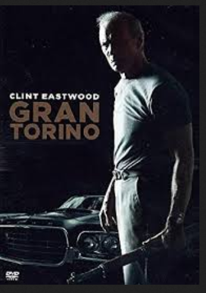
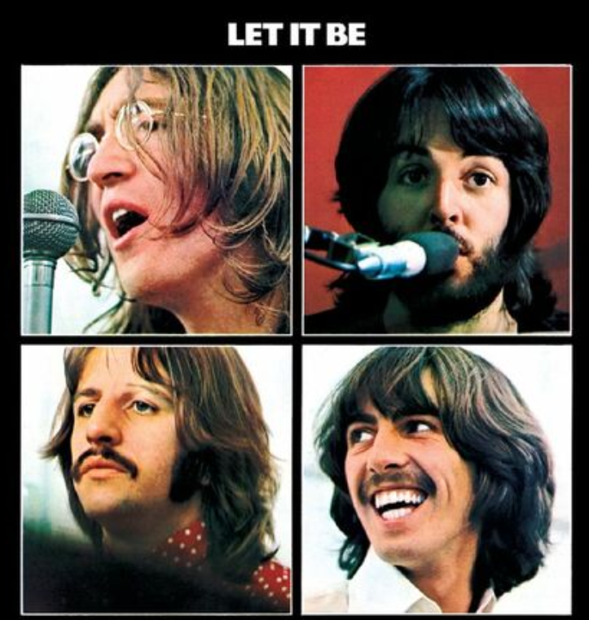
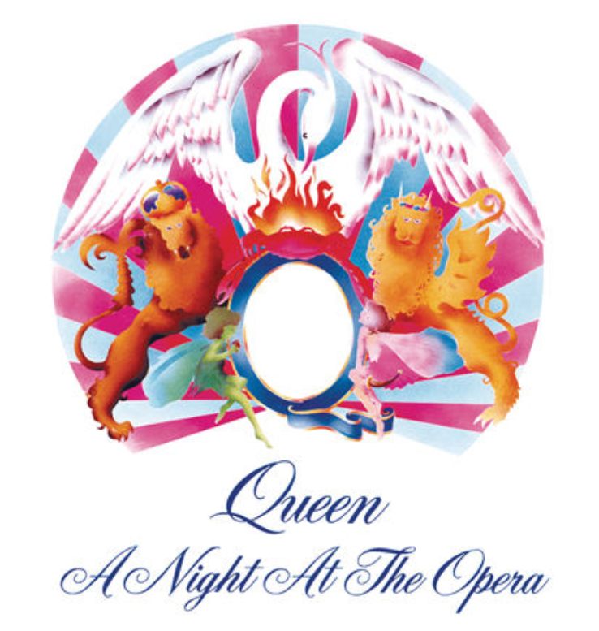
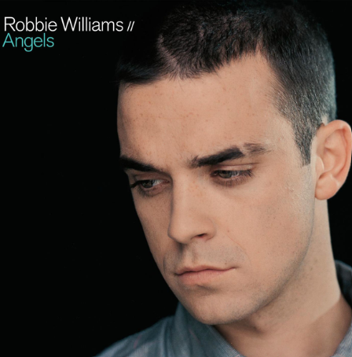

Habilidades Principales Desarrollo Móvil & Web Lógica de Programación Control de Versiones Git Arquitectura de Información
Películas Favoritas El secreto de sus ojos José Campanella (2009) Ver en IMDb ↗ El sexto sentido M. Night Shyamalan (1999) Ver en IMDb ↗  Gran Torino Clint Eastwood (2008) Ver en IMDb ↗
Discos Favoritos  Let it Be The Beatles (1970) Escuchar en Spotify ↗  A Night at the Opera Queen (1975) Escuchar en Spotify ↗  Angels Robbie Williams (1997) Escuchar en Spotify ↗